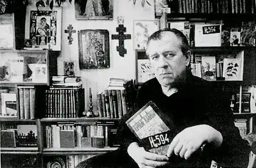
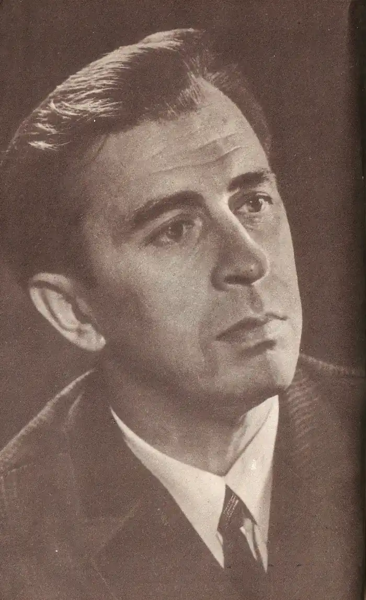

Анатолій Володимирович Жигулін (1930-2000) — радянський і російський поет і прозаїк, автор ряду поетичних збірок і автобіографічної повісті "Чорні камені" (1988).
Анатолій Жигулін народився 1 січня 1930 року в с. Підгірне Воронезької області. Батько майбутнього поета Володимир був вихідцем з селян, поштовим службовцем. Тривалий час він страждав на відкриту форму сухот. Тому основні турботи про трьох дітей лежали на плечах матері, жінки освіченої і любила поезію. Вона часто читала дітям вірші і співала їм пісні. Мати була правнучкою учасника Великої Вітчизняної війни 1812 поета-декабриста Володимира Федосійовича Раєвського, який належав до радикального крила Рилєєва.
У будинку діда, куди переїхала сім'я Жигулін в 1937 році, вціліла бібліотека родини Раєвських, в тому числі і фамільні альбоми кількох поколінь. Будинок разом з бібліотекою згорів під час бомбардувань Воронежа в 1942, але вся сім'я вціліла. Воронеж і область протягом восьми місяців були у фронтовій зоні, сім'я була раз'ятим, і тому не брав участь у війні через малолітство Анатолій повною чашею випив голод і позбавлення війни і життя в напівзруйнованому місті в повоєнний час. Пізніше тема рідного міста, дитинства та війни чітко зазвучить в творчості Жигуліна. Хлопчик підростав в умовах наростаючого сталінського терору. Інша, ростовська, гілка родини Раєвських, була або знищена в роки громадянської війни, або загинула в застінках ЧК. Тому батьки боялися розповідати йому про те, що по матері він походить з давнього і волелюбного дворянського роду. Однак допитливий хлопчик гортав томи бібліотеки і фамільні альбоми, з яких дізнавався про славні діяння своїх предків. У старших класах Толя починає писати вірші, поки, в основному, це викладені у віршах шкільні твори. Але поступово його рядки набирають силу, і навесні 1949 воронезької газеті з'являється перша публікація. Толі Жигулін 19 років, і він збирається вступити до лісотехнічний інститут. Чому в лісотехнічний? Це було тяжке повоєнний час, в сім'ї було ще двоє молодших: брат і сестра і потрібно було здобувати фах будинку. До того ж відмінно навчався юнак любив і техніку, і природу. Взимку 1946 року група воронезьких школярів — старшокласників, зробила лижний похід по Воронезькій області в рідне село одного з учасників походу, Юрія Кисельова. У числі учасників походу був і Борис Батуев, син другого секретаря Воронезького обкому партії. Опухлі від голоду колгоспники потрясли неординарного юнака. Занадто явною була різниця між оглушливої пропагандою і реальним життям. Це підштовхнуло Бориса поглиблено зайнятися вивченням історії революції. Прочитаним Борис ділився зі своїми найближчими друзями. Під впливом Бориса вони прийшли до висновку, що Сталін спотворив ленінізм, і що необхідно почати боротьбу за відновлення ленінського вигляду партії, причому виключно мирними засобами. Так була створена в 1947 році КПМ — Комуністична Партія Молоді, куди в якості члена бюро вступив в 1948 і Толя. Незабаром добре конспіруватися організація нараховувала близько 60 осіб. Залучення в організацію велося за багатоступеневою схемою, проте, незважаючи на це, в вересні 1949, коли члени КПМ зі школярів перетворилися в студентів, почалися арешти. Слідство велося 9 місяців і супроводжувалося жорстокими побиттям і багатогодинними безсонними допитами. Ретельна конспірація дозволила уберегти від арешту половину учасників руху, але решта отримали в повній мірі. У червні 1950-го рішенням Особливої наради Жигулін був засуджений до 10 років таборів суворого режиму. Перебування у в'язниці під час попереднього слідства, життя в Тайшетського таборі і на Колимі докладно описані в широко відомої повісті Жигуліна "Чорні камені" і в його численних віршах. Справедливо відзначено в одній зі статей, присвячених поетові, що тема ГУЛАГу, тема неволі — це той фундамент, на якому побудовано всю творчість Жигуліна. У 1954 Жигулін вдається вийти на свободу за амністією, а в 1956 наступила повна реабілітація. У 1960 він закінчив лісотехнічний інститут, але ще за рік до цього в Воронежі в 1959 вийшла перша, тоненька книжка його віршів ( "Вогні мого міста"), а в 1963 побачила світ перша московська книга віршів "Рейки". В цьому ж році Жигулін надійшов на Вищі літературні курси. З цього часу Жигулін жив в Москві і вів життя професійного літератора. У 1964 в Воронежі тиражем всього в 3 тисячі вийшла книжка віршів Жигуліна, яка викликала захоплений відгук з боку преси. Важливою віхою в житті поета стало його знайомство в 1961 з Твардовським. Слід зазначити його великий вплив на поезію Жигулина поряд з творчістю Кольцова, Клюєва і Єсеніна. Жигулін був за своєю природою дуже доброю людиною. Таким він і залишився, незважаючи на всі жахи його табірного життя. Та й потім йому доводилося нелегко. Вийшовши з неволі, в якійсь мірі він виявився людиною пригніченим, і кілька разів потрапляв до психіатричної лікарні. Життя в таборах не лише залишила глибокий слід в його житті, але і в його поетичній творчості. Настільки, що деякі його вірші повторюють до дрібниць досвід його табірних пригод. Все життя Жигулін повертався до табірної темі, вважаючи своїм обов'язком розповісти про те, що бачив і пережив. Навіть в застійні часи він відкидав тут компроміси. Бунтар і справедлівец, Жигулін — тонкий лірик есенинского спрямування. Дивна його любовна поезія, з її тихою меланхолійною красою. Не дарма стільки прекрасних пісень створено на його вірші. Помер Анатолій Жигулін в Москві 6 серпня 2000 року на 71-му році життя.